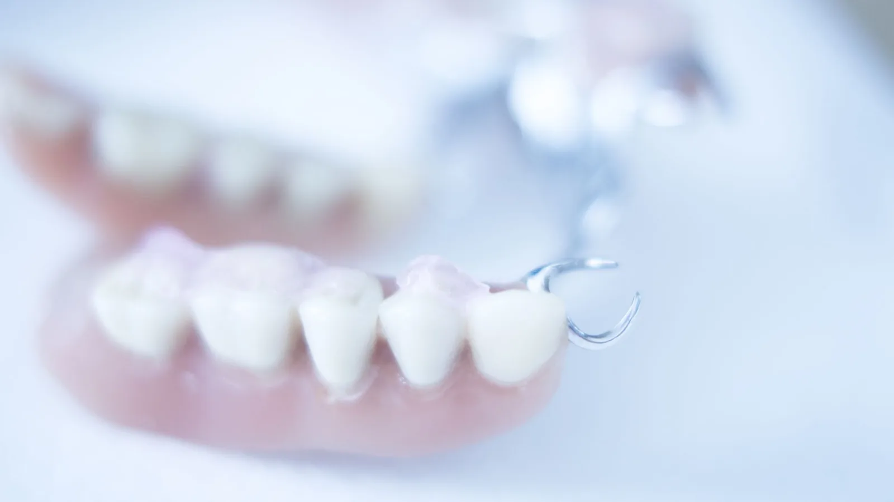

Restorative Dentistry
Replacing several teeth without surgery.
A partial denture replaces missing teeth with a removable appliance that clips around the teeth you still have. It restores chewing, supports the lips and cheeks, fills visible gaps, and stops remaining teeth drifting into the space.
It is the practical option where several teeth are missing, where the gaps are spread around the mouth, or where implants or bridges are not suitable — because of bone volume, general health, or cost.
Full dentures are not currently provided at Lava Street Dental. Where you need a full denture, we will refer you.

Types
Acrylic partial dentures have a plastic base and are generally the more economical option. They are also the usual choice as an immediate or interim denture while tissues heal after extractions, since they are simpler to adjust and add to.
Cobalt-chrome partial dentures have a cast metal framework. They are thinner, stronger, and can be designed to take support from the remaining teeth rather than resting entirely on the gum, which is generally more comfortable and kinder to the tissues over time. They cost more and are the usual recommendation for a long-term denture.
Dr Meg will explain which is appropriate for your situation and why, along with the cost of each.
What is involved
Making a partial denture takes several appointments, because each stage builds on the last. Records are taken — usually a digital scan, sometimes a conventional impression where that gives a better result — then the bite is recorded, then a try-in stage lets you see the tooth position and shade before anything is finalised. The finished denture is then fitted and adjusted.
The try-in matters. It is where the appearance is agreed, and it is far easier to change tooth position at that stage than after the denture is processed.
Settling in
A new partial denture takes getting used to. Expect it to feel bulky for the first week or two, expect speech to need practice, and expect to start with softer food cut small before working up. Increased saliva at first is normal.
Sore spots are also normal and are the reason review appointments are scheduled. Do not endure a rubbing denture and do not adjust it yourself — bring it in, wear it for a few hours before the appointment so the sore spot is visible, and we will relieve it.
Care
Clean the denture over a basin of water or a folded towel so it survives being dropped. Brush it daily with a denture brush and mild soap rather than toothpaste, which is abrasive. Leave it out overnight and store it in water so the tissues get a rest.
Keep seeing us regularly. The teeth holding the denture in place carry extra load and need watching, and the gum underneath changes shape over the years, so the fit needs reviewing.
Frequently asked questions
A few weeks for most people. Speech and eating both improve with practice. Reading aloud at home is the fastest way to sort out speech.
A well-made partial denture is designed to be discreet. Metal clasps are placed as unobtrusively as possible, and tooth shade and shape are matched to your own at the try-in.
Yes, in almost all cases. Leaving it in overnight means the gum tissue never rests and raises the risk of fungal infection.
Several years is typical, but the gum and bone underneath change shape over time, so it will need relining or eventually remaking. Regular reviews pick that up before it becomes a problem.
Often yes, particularly with acrylic dentures. Cobalt-chrome frameworks are less straightforward to add to but can sometimes be modified. We will advise at the time.
Possibly. Whether implants are suitable depends on bone volume, gum health, general health and cost. Dr Meg places implants and can assess whether they are a realistic option for you.